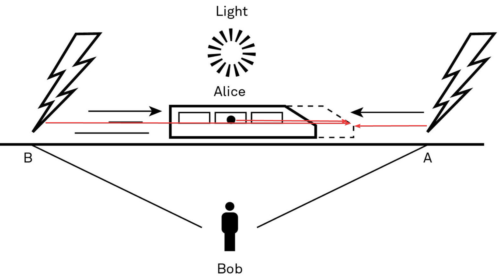

Thinking Concepts
Thinking flaws
Perspective
We have a hard time seeing any system that we are in. Galileo throwing ball below deck on a ship vs. a fish seeing the vertical and the horizontal movements.
Ego
Investment into a specific opinion prevent us from seeing reality.
Distance
The further we are from the results of our decisions, the easier it is to keep our current views rather than update them.
Circle of Competence
Try to stay mainly within the circle for when we stray too far, we get into areas where we don't even know what we don't know. We may not even know the questions we need to ask.
Try to learn the basics about areas outside your circle of competence and try to learn from experts.
First Principle Thinking
Clarify complicated problems by separating the underlying ideas or facts from any assumptions based on them. What remain are the essentials. If you know the first principles of something, you can build the rest of your knowledge around them to produce something new.
The discovery that a bacterium, not stress, actually caused the majority of stomach ulcers is a great example of what can be accomplished when we push past assumptions to get at first principles.
To improve something, we need to understand why it is successful or not. Otherwise, we are just copying thoughts or behaviors without understanding why they worked.
Inversion
There are two approaches to applying inversion in your life.
- Start by assuming that what you're trying to prove is either true or false, then show what else would have to be true.
- Instead of aiming directly for your goal, think deeply about what you want to avoid and then see what options are left over.
The map is not the territory
A model is by definition a simplification of the real world, never assume that it fully reflects the real world and update the model/map if necessary.
Physics
Relativity
Different perspectives of whether lightning struck at the same time (Bob) or first in front (Alice because of the train movement the light from point B had to move further and thus was perceived later)

We often think someone is wrong because they see things from a different perspective than we do. Relativity helps us to understand that there is more than one way to see everything. That doesn't mean everyone's perspective is equally valid, only that we might not have the most complete view into a problem or situation.
The reality of multiple perspectives is critical to understanding the world and your place in it. We can only see so much. In concrete terms, relativity highlights a subjectivity of perspective that explains partly why eyewitness testimonies have lost their credibility over the years.
Many problems become clearer if you extend the timeline. What does this situation look like in the weeks, months, and years ahead? Assuming different perspectives allows you to gain a more complete understanding of what's really going on.
Reciprocity
In physics, reciprocity is Newton's third law, which states that for every force exerted by object A on object B, there is an equal but opposite force exerted by object B on object A. Every force involves the interaction of two objects where the force asserted by one is reciprocated with an equally powerful and directionally opposite force by the other object. Forces always occur in pairs of the same type of force, and it is not possible for one object to exert a force without experiencing a reciprocal force.
Reciprocation teaches us that if you give people cynicism and curtness or nothing at all, you are likely to receive the same. But if you give people opportunity and the benefit of the doubt, you will, more often than not, be on the receiving end of the same behavior.
Thermodynamics
-
The first law of thermodynamics states that energy cannot be created or destroyed; it can only be transferred or changed from one form to another, such as from light to heat.
-
The second law of thermodynamics states that entropy (a measure of disorder simply understood as energy unable to be used to do work) of an isolated system always increases. Isolated systems are those that spontaneously progress toward the state of maximum entropy of the system, also described as thermal equilibrium---no net heat flow between objects. The entropy of the universe only increases with time. One of the impacts of this law is that we need to expend energy to create order. Without the deployment of energy, all things move away from order.
-
There are more ways for things to be mixed up than sorted.
-
But there is value in contrast. If all the forces are balanced, a true state of equilibrium, there is no change, no growth, no movement. It is contrast that drives development.
-
There is a constant effort to maintain structure (avoid entropy) by consuming external energy (sunlight, food). In the process, life increases the entropy of (destroys) its environment and decreases entropy (builds or repairs) the organism's body.
-
The third law of thermodynamics states that as temperature approaches absolute zero, the entropy of a given system approaches a constant value.
-
The fourth law of thermodynamics is known as the zeroth law. This is because it was formulated after the first three laws but is fundamental to and assumed by the others. It states that if two objects are in thermal equilibrium with a third object, then those two objects are also in thermal equilibrium with each other.
Inertia
Starting something is hard, but so is stopping something. In physics, inertia refers to the resistance a physical object has to a change in its state of motion.
The relevance of mass has analogous application in our habits. The longer we've been doing something, the more it has become part of both our identity and our understanding of the world. Thus, the amount of effort required to change a habit is greater proportional to the length of time we've had it.
Getting started is the hardest part. Once something is moving in a direction, it's much easier to keep it in motion.
To achieve our aims, reducing resistance is often easier than using more force.
Friction and Viscosity
While we can never eliminate the forces that impede our progress, we can work to minimize them. Like a smooth surface provides less challenge to a rolling ball, or how water is easier for a human to swim through than a krill, shaping our environment to reduce the challenges of opposing forces is a key to improving productivity.
Viscosity, which can be seen as the partner of friction, is the "measure of how hard it is for one layer of fluid to slide over another layer." If a liquid is hard to move it is more viscous. If it is more viscous there is more resistance.
Velocity
Velocity is often confused with speed, but the two concepts are very different. Speed is just movement; even if you are running in place, you have speed. Velocity has direction. You must go somewhere in order to have velocity. This model teaches us that it's much more important to pay attention to where you are going and not how fast you are moving
Chemistry
Activation Energy
In chemistry, activation energy is the energy that must be delivered to a chemical system in order to initiate a reaction, breaking bonds so that new ones can form. Molecules must collide to react, and movement speeds up when temperature increases. All chemical reactions have a required activation energy, but there is a range. We start with an increase in temperature, which leads to an increase in molecular velocity, resulting in an increase of the frequency of molecular collisions. The more collisions, the more chances of having sufficient energy to produce a reaction.
The bigger and more challenging an action is, the more activation energy required. And it's important to remember that the buildup to doing something is part of the activation energy required---this build up includes everything.
When trying to change something it's not enough to put up the energy to remove the unwanted thing or behaviour you also must anticipate what's required to form a new structure once you break the old one apart.
Biology
Adaption and Read Queen effect
We have to deal with the environment we are in, not the one we wish we were in. Adaptations are successful relative to their performance in a specific environment, relative to the pressure and competition the organisms face. We don't have to be objectively best, just better than those we are competing against. "In other words, living things do only as well as they have to rather than optimize."1